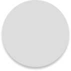
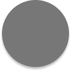
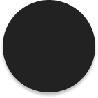

Objective
리네로제는 한국에서 큰 인기를 얻고 있지만, 한국 공식 사이트는 아직 존재하지 않는다.
고유한 브랜드 가치를 담아 디자인하고, fullpage style을 시도하여 퍼블리싱하는 것을 목표로 선정했다.
Design
-
Keyword
- # 깔끔한
- # 통일감
- # 담백한
- # 부드러운
-
Color
-

#F6F6F6
-

#dddddd
-

#777777
-

#222222
-

-
Font
Publishing
- GSAP ScrollTo와 ScrollTrigger를 fullpage를 구현
- 비동기 함수 setInterval를 활용해 사진이 바꾸는 event 구현
- SCSS의 @mixin과 @include 활용
- gird와 flex를 활용해 레이아웃 제작 / 제어
- css animation을 활용해 다양한 움직임 적용
Problem &
Solution
Review
- 디자인부터 퍼블리싱까지 혼자 완성하면서 난관 봉착과 난관 해결의 연속이었다.
타이트한 일정 속에서 난관에 부딪혀도 무너지지 않고 계속 나아가는 것을 배웠다. - 첫번째 쉽게 포기하지 않는 것, 두번째 해결되지 않을 때 빠르게 다른 방향을 모색하는 것.
이 마음가짐을 품고 프로젝트를 완성시켰다. - 이번 프로젝트에선 시도해보지 않았던 fullpage style을 선택했다.
할 수 있는 것을 완벽하게 익히는 것도 중요하지만,
아직 배움이 부족하다 느껴 더 배울 수 있는 스타일에 도전했다.
다양한 fullpage style을 접하고 공부했다. - 처음 기획했던 100%를 완성하진 못했지만,
더 많은 시간이 주어진다면 해결하지 못한 수 많은 숙제를 풀고 싶다는 마음이 크다.